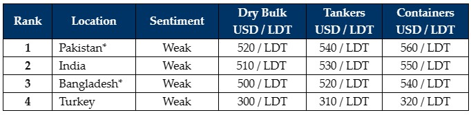

inWeekly Demolition Reports14/08/2023

It has been another intensely inert week in the Indian sub-continent ship recycling markets, with Bangladesh sinking to the bottomof the price-ranking board and neighboring India & Pakistan taking the lead (in terms of pricing and ability to secure unsold tonnage currently on offer).
Not only does the Bangladeshi market have a vanishing appetite for vessels at any sensible levels, but the lack of L/C and financing approvals also appears to be making local resales just as difficult, even months after the budget was announced and even amidst this most challenging of times.
At least Pakistan has shown some promise and appetite to come back into the picture, with further discussions on unsold units reported as this market leapfrogs past India’s prices, which still have the advantage of, and are backed by, L/C and financing abilities on units of any size, especially when compared to the Pakistani & Bangladeshi markets.
Ironically, despite being the most reliable of the sub-continent destinations on L/C / financing issues, Indian prices continue to underwhelm as most Alang Buyers seem content on waiting-and-watching market movements before offering firm once again.
Consequently, we have witnessed many Owners withdrawing their vessels from the market entirely, so disastrous has been the ongoing decline in levels, and it may not even be worth considering the recycling option for some Owners – especially not at some of the ridiculously opportunistic numbers.
In terms of supply of vessels, amidst a dire weakening of sentiments from this sector, it continues to primarily be a flow of dry bulk units. Moreover, a majority of containers (even those with surveys due) continue down the trading lanes and have been mostly missing from the recycling markets of late.
Finally, on the far end, the Turkish market remains unchanged and inert for another week, with fundamentals facing opposite directions and no news of market units being proposed.
For week 32 of 2023, GMS demo rankings / pricing for the week are as below.

📄 Download PDF: Ship-recycling-market-insight-week-32-2023-Terrible.pdfSource: GMS,Inc. ,https://www.gmsinc.net/gms_new/index.php/web